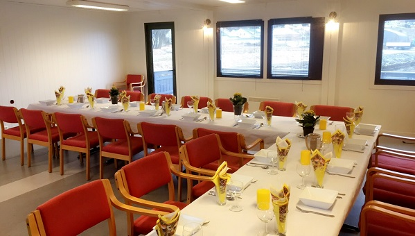
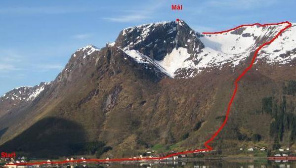
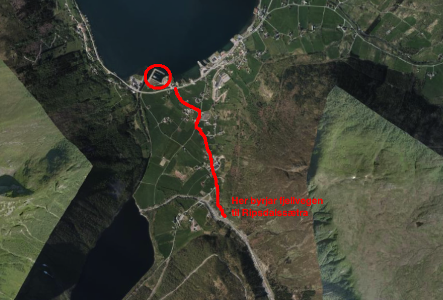
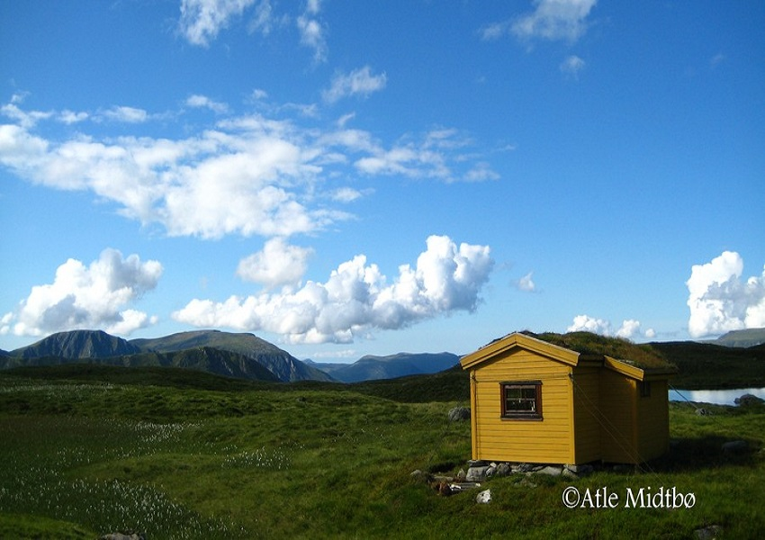

Notaplassen Hamnelag driftar i dag heilårshamna ”Notaplassen Hamn” som ligg inst i Syvdsfjorden
omkransa av majestetiske fjell på kvar einaste side. Hamna er ei kombinert båt- og gjestehamn og
består av to flytebrygger a 57 meter lange. Totalt er det plass til 65 båtar.
Koordinatane til hamna er N 62.08775 E 005.72987
I dag har hamnelaget 35 medlemmer, og eige servicebygg/klubbhus. Servicebygget inneheld eit toalett tilrettelagt for bevegingshemma med eige dusjhjørne, kjøkken og møterom/selskapslokale med plass til 40 personar tilrettelagt for utleige.
Fylgjande prisar gjeld per 01.02.2017:
| Størrelsar | Prisar |
|---|---|
| 2,5 meters-plass | 43.000 kr |
| 3 meters-plass | 53.500 kr |
| 4 meters-plass | 61.500 kr |
Det er ca 80m med bryggje for gjesteplassar.
Prisar for desse er som følgjer:
» Kr 100,- pr. døgn for båt opp til 42 fot inkl. straum/vatn
» Kr 150,- pr. døgn for båt over 42 fot inkl. straum/vatn
Bruk av båtopptrekk kr 150.- pr gong for ikkje-medlem av hamnelaget, betaling i kasse ved brygger eller til kontonr: 3910.30.81681
For kjøp av båtplass, kontakt Gunnar Eikrem eller Jan Eikrem
Tlf: 959 18 905/ 951 69 699
joeikrem@hotmail.com
English below.
100 kr u/strøm per døgn og 150 kr m/strøm per døgn. Betaling leggjast direkte i postkassa som er festa lett synleg ved inngongen til serviceanlegget.
For bruk av WC send sms til 959 18 905 eller 995 44 327 merka med ”kode WC” for å få tilsendt koda til nøkkelboksen.
Per day: 100 kr without electricity or 150 kr with electricity. Put the payment in the postbox which is attached to the outer wall at the toilet building.
For access to the WC send a text message to +47 959 18 905 or +47 995 44 327 marked with ”kode WC”. You´ll then get the code to the key box (attached on the outer wall).
Til arrangement av ulike slag stiller Notaplassen Hamnelag SA opp med eit sjarmerande selskaplokale midt
i Syvde sentrum med vakker utsikt til alle kantar.
Kjøkkenet er utstyrt med servise til 37 stk og opphaldsrommet
har god plass til det same antal gjestar.
Kontaktperson er Kristian Bentsen (tlf: 907 58 975)
| Beskrivelse | Prisar |
|---|---|
| Leige av heile huset, eksl. vask etter arrangementet | 600 kr |
| Leige av heile huset, inkl. vask etter arrangementet | 1100 kr |
Her er eit bilete som viser selskapslokalet
Vilkåra gjeld for leige av serviceanlegget ved Notaplassen hamn og dets tilhøyrande lausøyre. Vilkåra gjeld uavhengig om det er tale om leige med eller utan vask.
| NR. | Beskrivelse |
|---|---|
| 1 | Leigetakar er objektivt ansvarleg for all skade som blir påført leigeobjektet av han sjølv eller andre han gjev adgang til leigeobjektet. |
| 2 | Leigetakar pliktar å straks informere utleigeansvarlig dersom det oppstår skade. |
| 3 | Leigetakar pliktar å ta med alt tomgods etter endt bruk av lokalet. |
| 4 | Etter endt bruk skal stolar stablast med 5 stolar i høgda og setjast ytterst langs veggane i opphaldsrommet eller i yttergangen. |
| 5 | Brukte vaskefiller og golvmoppar skal vaskast og tilbakeleverast til serviceanlegget. |
| 6 | Brukt kjøkken- og serveringsutstyr skal reingjerast i oppvaskmaskina og setjast tilbake i kjøkkenskapet. |
| 7 | Leigetakar kan ikkje framleige leigeobjektet. |
Med dei høgreiste fjella som nokre plassar skyt mest rett ned i havet, og som den einaste bygda i Vanylven med 1000 meters toppar, er Syvde eit eldorado for sporty menneske. Skulle ein vere av det meir bedagelege slaget finst det også andre aktivitetar. At Syvde ligg midt i Vanylven kommune med kort avstand til alle dei andre bygdene rundt gjer at moglegheitene for utflukt er mange. Nedanfor kan du sjå nokon av dei opplevingane nærområdet til Notaplassen Hamn kan tilby.
Den etter kvart svært så kjente og populære besøksgarden er verdt eit besøk når ein først er i området. På Hakallegarden kan du verkeleg oppleve livet på landet og kome i nærkontakt med dyr av mange slag. Skulle du så verte lei av å klappe alpakka, ri på hest eller køyre Gråtass kan du nyte eit lite måltid og vakker utsikt frå den koselege kaféen på garden. For meir informasjon sjå Hakallegarden.no
Med fjell på kvar einaste side er Notaplassen Hamn eit godt utgangspunkt for fjellturar. Om ein berre skulle ynskje ein roleg skogstur eller om ein ynskjer å bestige 1000-meterstoppar så er Syvde staden for dette. Med svært godt oppmerka turløyper av ulik vanskegrad er også alt lagt til rette for at alle kan ferdast i naturen.
For dei sprekaste kan det kanskje være ei utfordring å bestige alle dei fem 1000-meterstoppane i Syvdsfjella på ein og samme dag? Høgenipa 1097, Myrkevasstinden 1131, Sandfjelltuva 1002, Blæja 1142, Lissjeblæja 1032 ligg alle slik til at dette er fullt mogeleg. Skulle ein vere eit større konkurransemenneske kan ein prøve seg i løypa til motbakkeløpet BLÅFELDEN RETT OPP. Med ei løypelengde på 4,38 km og høgaste punktet på 842 m.o.h. er dette ei løype som også den best trente vil slite i. Klarer du å slå Øyvind Heiberg Sundby si løyperekord på 37.56?
Skulle ein også ha fisking som ei interesse kan ein freiste fiskelukka i eit av dei mange fiskerike fjellvatna i Syvdsfjella. Lissjerøfsdalsvatnet og Blæjevatnet er her to perler.

For å kome til Blæjevatnet følg fjellvegen som går heile vegen til Ripsdalssætra. Turen frå hamna til Ripsdalssætra tek ca. 1 time til fots.
Når du kjem til Ripsdalssætra vil du sjå mange hytter og ein parkeringsplass. Frå parkeringsplassen er det skilta og merka heile vegen til ”Blæjevassbu”.
Turen frå Ripsdalssætra til Blæjevassbu tek ca. 1,5 time med roleg gange.
Ved Blæjevatnet ligg også ei hytte som er åpen for alle og som det er mogleg å overnatte i(Sjå bilete nedanfor).
Hytta har fem overnattingsplassar og ein omn. Ta kontakt med Myklebust Sameige for bruk v/ Leon Stranden (tlf: 970 37 137).

For å kome til Lissjerøfsdalsvatnet følg fjellvegen forbi Ripsdalssætra til
vegs ende. Frå vegenden tek det ca. 25 minutt i lett stigande terreng før ein kjem til den
idylliske Lissjerøfsdalen og fiskevatnet der. For ytterlegare veiledning og turtips last ned turappen til Vanylven Utvikling. Søk på ”vanylven” i appstore.
For dei som ynskjer litt større fisk kan Myklebust elveeigarlag by på ørret- og laksefiske i særklasse. Ikkje mange plassar kan du som friluftsfiskar ha fleire hundre meter med elvar og hølar for deg sjølv. For kjøp av fiskekort kontakt Dagrun Molvik i Myklebust elveeigarlag, tlf: 482 67 409.
Kvart år i pinsehelga arrangerer ein stor dugnadsgjeng ei helg med mange aktivitetar for både små og store. Sentralt i helga står motbakkeløpet ”Blåfelden Rett Opp”. Med ei løypelengde på 4,38 km og høgaste punkt på 842 m.o.h. er dette eit løp der til og med den sprekaste vil slite. Opp gjennom åra har kjente navn som Oddbjørn Hjelmeset, Simen Østensen og Anders Aukland deltatt. For meir info om løpet sjå syvdeil.no.
Kosterikjehelga byr sjølvsagt på meir enn berre motbakkeløp. Kunst og kultur er også viktige ingrediensar. Musikk, stand-up, gratis frukost, kyrkjekonsert, kunstutstilling og dans på laurdagskvelden er kvart år viktige ingrediensar.
”På to dagar i juli vil vi presentere ei stor spennvidde av musikalske opplevingar frå scena, det meste er norsk men også noko frå utlandet” skriv Vanylvsråkk på sine eigne nettsider. Tidlegare års artistar har mellom anna vore Kurt Nilsen, Hellbillies, The Straits og Smokie. For meir info sjå vanylvsråkk.no.
Er du ute etter eit godt måltid til ein rimeleg pris der du samtidig kan nyte ei upåklageleg utsikt over vakker og storslått natur? Då er dette staden for deg. Restauranten er open kvar søndag frå 12-18 frå slutten av juni til ”over sommaren”. Á la carte og alle rettigheiter. Følg skilting mot Sørdalen frå sentrum av Syvde. Når du kjem til enden av Sørdalen følg fjellvegen til Øverberg og vidare skilting derifrå.
Under finn du eit dokument med vedtekter.
NB: båtplassprisane som står i vedtektene er ikkje oppdaterte. Gå til "Båtplass" for å sjå dei oppdaterte prisane.
Vedtekter
{kind=link}
{kind=link}
{kind=link}
{kind=link}
{kind=link}
{kind=link}
{kind=link}
{kind=link}